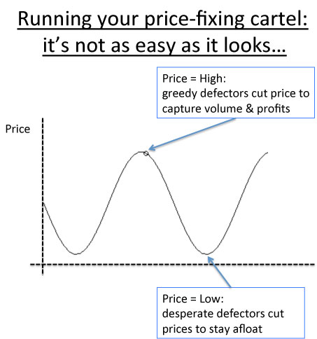

Jay Gould (CMC, Wednesday, Week 4)
coming-of-managerial-capitalismyear-twoStarts as small-scale railroad speculator, consolidates previously-disparate lines into large road networks.
Villain: no attempt to run his own enterprises efficiently, breaks securities law, spurs over-investment in capacity.
Hero: realizes the value of traffic, creates competition that benefits the consumer, compels railroads to consolidate rather than rely on cartel agreements, forces managerial capitalism (Vanderbilt family wealth alone cannot support necessary expansion).
How do we deal with railroads (natural monopoly; common goods; kind of like public utilities)? Options:\
Regulation
==> Promote public benefit
==> BUT will new investors take the risk of construction? And we hate big federal government (especially in 19th century).
Government construction/operation
==> Is the government really smarter/better at management than the private sector? Ha.
Self-regulation (collusion)
==> Not efficient
==> Natural tendency towards cheating; agreements are not really enforceable
==> Prisoner's dilemma-type scenarios

{kind=link}
Fink proposal: legalize collusion; build legal enforcement mechanism for price-fixing agreements
==> Is this better than regulation or government operation? I don't like government-protected barons.